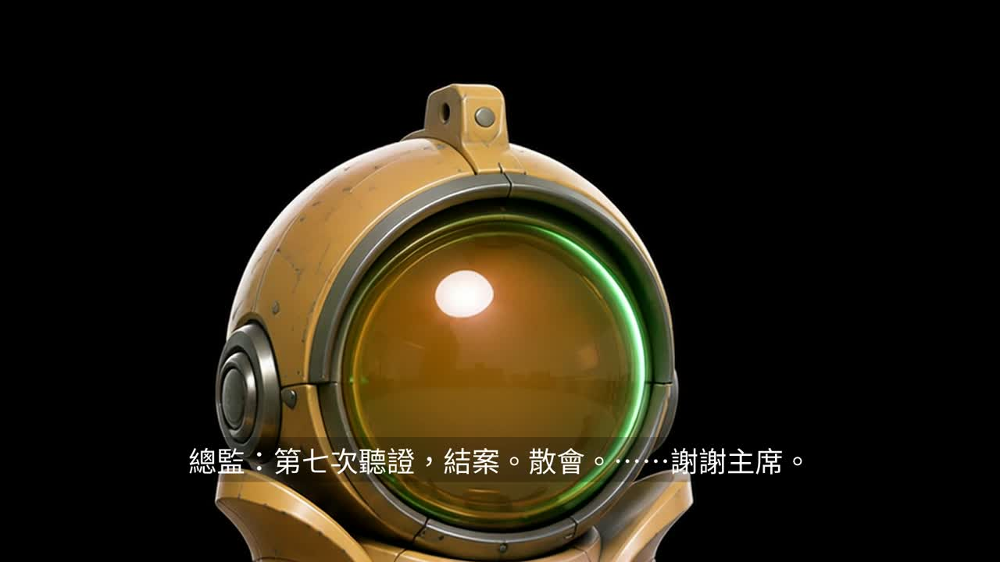

CSFCCA LIVE AI 2026
仿真人科幻故事
那一聲
靜默
AHEM
一場沒有人聽完任何一句話的會議
只有 AI 在聽

你們有遇過就大聲說「有」
01
話還沒講完
就被切掉
有沒有？
02
明明有想法
卻一直沒開口
有沒有？
03
散會了才想到
剛才該說什麼
有沒有？
這不是禮貌問題
是沒有人
有餘裕去
聽
片中第 38 秒，他忍不住輕咳了一聲。
那一聲小到你可能會錯過——
全場只有 AI 聽見了。
這 120 秒，全部長在這台機器裡
20
支素材
59
鏡
120
秒
畫面、聲音、配樂全部本機生成，沒有租用外部算力。
平均每鏡 2.03 秒，連續三鏡同鏡位 0 處。
AI 生成最難的不是生出來，是知道哪裡壞了
01
10 條硬性審計標準
，每一條都有跑得起來的機械檢查
02
每支素材都由
另一個獨立 AI
目視審過才決定用不用
03
對著鏡頭發呆的鏡頭
14.3 秒
→
4.75 秒
04
嘴在動卻沒有聲音
12 處
→
0 處
05
裁中景冒充的特寫
7 顆
→
只修掉 1 顆
第 5 條
沒有修完
：重生的版本構圖變寬會破壞鏡位設計，只換了最糟的那一顆，其餘 6 顆還在。
敢講哪裡還沒修好，才證明真的檢查過。
帶得走的不是這支片
是這套
品管流程
短影音
廣告片
教學影片
任何 AI 生成內容
它不綁題材、不綁模型。
只要是機器生出來的東西，就需要有人問「這裡對不對」。
AHEM
那 一 聲 靜 默
不管誰主持，
每個聲音都要被聽完
。
One Muse
01 / 08
本頁 40s
00:00
← → 換頁 空白鍵 下一步 N 講稿 H 計時列 F 全螢幕